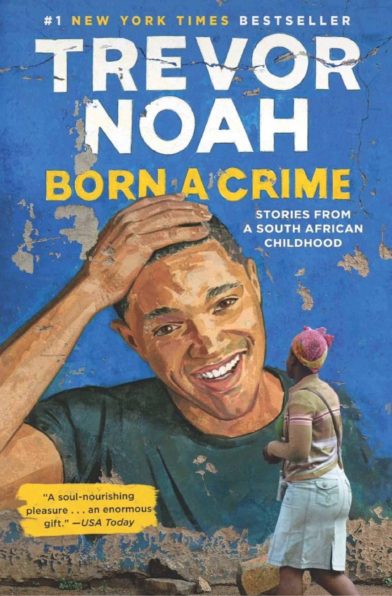

Baao Community College- Library

Welcome to
"BCCbookNook"

Born A Crime
Author: Trevor Noah
Awards: NAACP Image Award for Outstanding Literary Work - Debut Author, MORE
Nominations: Audie Award for Autobiography/Memoir, MORE
Originally published: November 15, 2016
Genres: Humor, Autobiography, Biography
Original language: English
About this Book
The book details Trevor Noah's experiences growing up in Johannesburg, South Africa during the apartheid era. Noah's parents were a white Swiss-German father and a black Xhosa mother; at the time of Trevor Noah's birth in 1984, their interracial relationship was illegal under the Immorality Act. According to Noah, "for [him] to be born as a mixed-race baby" was to be "born a crime."[1] Interracial relations were decriminalised when the Immorality Act was amended in 1985. As a mixed-race person, Noah was classified as a "Coloured" in accordance to the apartheid system of racial classification. Noah was raised primarily by his mother and her family in Soweto.
BCCBookNook (c) All Rights Reserved • 2023-2024
Contact Us:
 09982261095
09982261095
Address:
San Juan, 4432 Baao, Camarines Sur